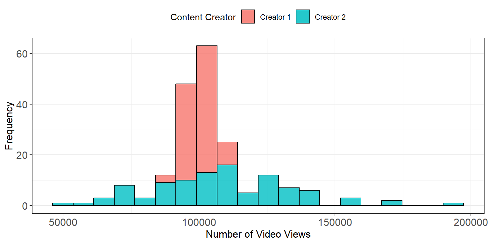
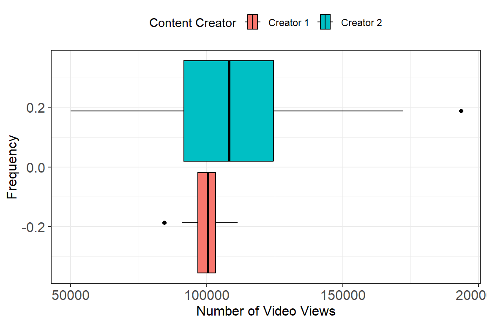
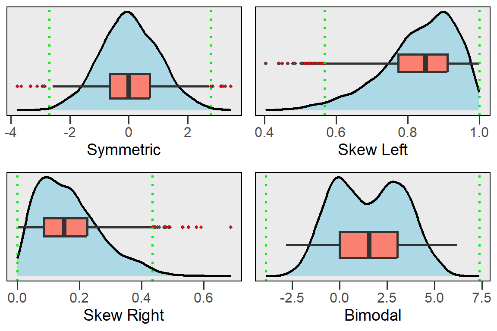
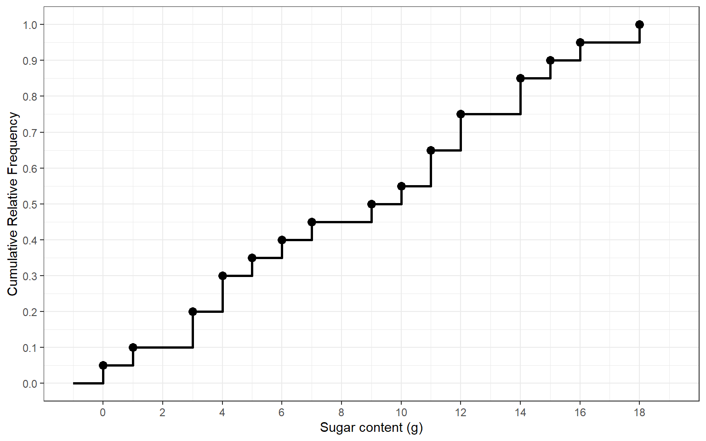
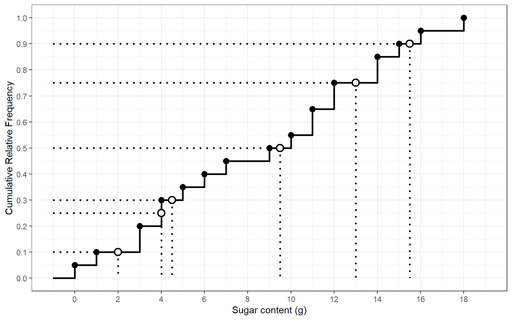

Week 3 Notes
STAT 251 Section 01
NO CLASS — Labor Day (Monday, September 7, 2026)
A note on quartiles: which definition?
Before going any further, one thing worth settling, because it causes more confusion than almost anything else in this part of the course.
There are several accepted ways to calculate a quartile. The one we use in this class is the median of halves method: find the median first, and when \(n\) is odd, leave that median out when forming the lower and upper halves. For example,
\[ 2, \quad 4, \quad \boxed{5}, \quad 7, \quad 12 \]
The median is 5, so we exclude it:
\[ \underbrace{2, \ 4}_{\text{lower half}} \qquad \underbrace{7, \ 12}_{\text{upper half}} \]
and therefore
\[ Q1 = \frac{2+4}{2} = 3, \qquad Q2 = 5, \qquad Q3 = \frac{7+12}{2} = 9.5 \]
You may notice that R gives different quartiles for this data. That
is not a mistake by either of you — statistical software has to pick one
of several mathematical definitions of a sample quartile, and R’s
default quantile() interpolates between the ordered values
rather than taking the median of each half. R’s boxplot()
is different again: it draws its box at Tukey’s hinges,
which keep the median inside both halves, so its lower hinge
here is \(\text{median}(2,4,5) =
4\).
| Method | Q1 | Median | Q3 |
|---|---|---|---|
| Median of halves – this class | 3 | 5 | 9.5 |
R quantile() default
|
4 | 5 | 7 |
R boxplot() hinges
|
4 | 5 | 7 |
For an even number of observations the
median-of-halves rule and Tukey’s hinges agree — there is no middle
value to argue about — which is why every other example in these notes
matches what R’s boxplot() draws. The disagreement only
appears when \(n\) is odd.
Which definition does software use?
There is no single answer, which is exactly why this is worth knowing. Broadly there are two families, and which one you meet depends on the tool:
- Interpolation methods — walk to the position \(p(n-1)+1\) in the ordered data and, if that
position falls between two observations, interpolate between them. This
is the more common default in statistical and numerical software: it is
what R’s
quantile()does unless you ask otherwise (R calls ittype = 7), and the same rule is behind Excel’sQUARTILE.INC/PERCENTILE.INCand the default in Python’s NumPy and pandas. A quartile computed this way is often not one of your data values. - Median-of-halves methods — split the ordered data
at the median and take the median of each half. These differ only in
whether the median itself is kept in the halves: leaving it out is the
rule we use (and the one built into TI graphing calculators); keeping it
in gives Tukey’s hinges, which is what R’s
boxplot()andfivenum()draw.
R is unusual in shipping both — nine different definitions, in fact,
selectable through quantile(x, type = ) — which is why
quantile() and boxplot() can disagree with
each other on the same data, as they do on the five values above.
So: if your hand calculation and R disagree, neither of you is necessarily wrong. You need to know which definition is being used. In this class, use the median of halves, and apply the same method consistently.
Describing spread
A description of a distribution is not complete without a measure of spread to sit alongside its center. Week 2 covered the measures of location and position — the mean, median and mode, and the percentiles and quartiles. This week asks a different question: how far do the observations fall from one another, and from the center? As with the measures of center, everything below applies to quantitative variables only.
Measures of spread
Even the simplest statistical description of a variable should include at least one measure of center and one measure of spread. The reason being that measures of center or location can be misleading if we do not consider how much the observations vary. Consider the following example which gives the distributions of the number of youtube video views of two content creators.

From this example we can see that both distributions have approximately the same mean. However, Content Creator 2 has considerably more variability in the number of views and, on a good day, can potentially get up to double his normal number of views.
In some sense giving several percentiles or the quartiles together tells us how different values are spread out across the distribution but there are other measures of spread that are preferred.
The range
The simplest measure of spread is the range: the distance between the largest and the smallest observation.
\[ \text{range} = \text{maximum} - \text{minimum} \]
For the five values we work through in class, \(x = \{2, 4, 5, 7, 12\}\), the range is \(12 - 2 = 10\).
The range has one virtue — it takes two seconds to compute — and one serious flaw. It is built from the two most extreme points in the dataset and nothing else, so it is the least resistant measure we have: change a single observation at either end and the range moves by exactly that much. Look at the exam scores from Week 2:
\[\{61,61,65,65,66,68,69,73,74,75,76,78,79,90,94\}\]
Their range is \(94 - 61 = 33\). Drop the single highest score and it falls to \(90 - 61 = 29\); replace that 94 with a 99 and it climbs to 38 — all while the other fourteen students stay exactly where they were. That is why the range is reported as a quick descriptive fact but almost never used as the measure of spread.
The interquartile range
A better measure of spread that can be computed from the first and third quartiles is the interquartile range or IQR. The IQR tells us how dispersed the inner \(50\%\) of the data.
The IQR is defined as
\[IQR = Q3 - Q1\]
It measures the distance between \(Q1\) and \(Q3\)
The IQR is very resistant to outliers since it ignores the extreme ends of a distribution
Take the 15 statistics exam scores from the Week 2 notes,
\[\{61,61,65,65,66,68,69,73,74,75,76,78,79,90,94\}\]
for which we found \(Q1 = 65\), \(Q2 = 73\) and \(Q3 = 78\). Their interquartile range is
\[IQR = Q3 - Q1 = 78 - 65 = 13\]
so the middle half of the class scored within 13 points of one another. Compare that with the range, \(94 - 61 = 33\): the range is more than twice as large, because it is measuring the distance out to the two most extreme students rather than the bulk of the class.
Deviations, variance and the standard deviation
The range and the IQR each describe spread using only two numbers out of the whole sample. A measure that uses every observation starts from the idea of a deviation: how far a single observation falls from the mean.
\[ \text{deviation of } x_i = x_i - \bar{x} \]
An observation above the mean has a positive deviation, one below it has a negative deviation, and an observation sitting exactly at the mean has a deviation of zero.
- A natural first instinct is to average the deviations. That does not work, and it fails for a reason worth understanding: the deviations always sum to zero. Averaging them would report the same spread — zero — for data that is tightly packed and data that is wildly scattered.
Take our running example \(x = \{2, 4, 5, 7, 12\}\), which has \(\bar{x} = 30/5 = 6\):
| \(x_i\) | \(x_i - \bar{x}\) | \((x_i - \bar{x})^2\) |
|---|---|---|
| 2 | -4 | 16 |
| 4 | -2 | 4 |
| 5 | -1 | 1 |
| 7 | 1 | 1 |
| 12 | 6 | 36 |
The deviation column sums to \(-4 - 2 - 1 + 1 + 6 = 0\). That is not a property of these particular five numbers — it holds for every dataset, and the algebra is two lines:
\[\sum_{i=1}^{n}(x_i - \bar{x}) \;=\; \sum_{i=1}^{n} x_i \;-\; n\bar{x}\]
and since \(\bar{x} = \frac{1}{n}\sum_{i=1}^{n} x_i\) we have \(n\bar{x} = \sum_{i=1}^{n} x_i\), so the two terms are the same thing and
\[\sum_{i=1}^{n}(x_i - \bar{x}) \;=\; \sum_{i=1}^{n} x_i - \sum_{i=1}^{n} x_i \;=\; 0\]
The fix is to remove the signs before averaging, and the standard choice is to square them. That gives the variance, written \(s^2\) for a sample:
\[ s^2 = \frac{\sum_{i=1}^{n}(x_i - \bar{x})^2}{n-1} \]
For our example the squared deviations sum to \(16 + 4 + 1 + 1 + 36 = 58\), so \(s^2 = 58 / (5 - 1) = 14.5\).
- Squaring has a side effect: the variance is in squared units. If the data are waiting times in minutes, the variance is in minutes squared, which is not a quantity anyone can picture. Taking the square root undoes it and returns a number on the original scale. That is the standard deviation:
\[ s = \sqrt{s^2} = \sqrt{\frac{\sum_{i=1}^{n}(x_i - \bar{x})^2}{n-1}} \]
For our example, \(s = \sqrt{14.5} = 3.808\) — back in the units of \(x\) rather than those units squared. Roughly speaking, \(s\) is the typical distance of an observation from the mean, and here that is about 3.8 against a mean of 6.
x <- c(2, 4, 5, 7, 12)
mean(x)## [1] 6var(x) # s^2## [1] 14.5sd(x) # s## [1] 3.807887Why divide by \(n-1\) rather than \(n\)?
Because the deviations are not \(n\) independent pieces of information. They are computed from \(\bar{x}\), which was itself computed from the same data, and we already know they must sum to zero. Fix any \(n-1\) of the deviations and the last one is forced. So there are only \(n-1\) degrees of freedom among them, and dividing by \(n-1\) rather than \(n\) is what makes \(s^2\) an unbiased estimate of the population variance \(\sigma^2\). Dividing by \(n\) would systematically underestimate it.
- Both \(s\) and \(s^2\) are \(\geq 0\), and both equal zero only when every observation is identical.
- Like the mean, both use every observation, so like the mean, both are strongly influenced by outliers. When a distribution is skewed or has outliers, the IQR is the more honest description of spread.
Your \(s\) is itself an estimate
This subsection is a look ahead. It is not on Exam 1 — it is here because the question comes up naturally the moment you compute an \(s\), and because it is the idea behind the margin of error we meet in a few weeks.
Everything above describes the one sample you happened to collect. Collect another and every number changes — a different mean, a different \(s\), a different median.
To see that you need something you can actually repeat, so this one example steps away from our five values and rolls a die instead. Here are ten rolls, five separate times over:
| ten rolls | mean | \(s\) | |
|---|---|---|---|
| first roll | 1 2 3 3 4 4 4 5 6 6 | 3.8 | 1.62 |
| sample 2 | 2 2 3 3 3 3 4 4 6 6 | 3.6 | 1.43 |
| sample 3 | 1 2 2 3 3 4 4 4 5 6 | 3.4 | 1.51 |
| sample 4 | 1 1 3 4 4 4 5 6 6 6 | 4.0 | 1.89 |
| sample 5 | 1 1 2 3 4 4 6 6 6 6 | 3.9 | 2.08 |
That movement from one sample to the next is called sampling variation. A statistic has a distribution of its own, and its standard deviation across repeated samples is called its standard error. For the sample mean,
\[ SE(\bar{x}) = \frac{s}{\sqrt{n}} \]
so for those ten die rolls, \(SE = 1.619 / \sqrt{10} = 0.512\). Back on our five values, where \(s = 3.808\) and \(n = 5\), it would be \(3.808 / \sqrt{5} = 1.703\).
Notice the \(\sqrt{n}\): the larger the sample, the smaller the standard error, and the steadier the estimate. It is the reason a poll of 2000 people pins down an opinion far better than a poll of 20 — and it is why “how big was the sample?” is usually the first question worth asking about any statistic you are shown.
Which measures should you report?
A measure is resistant when a single extreme observation barely moves it. Whether a summary is resistant comes down to one thing: does it use every observation, or only positions in the ordered data?
| Measure | Describes | Computed from | Resistant to outliers? |
|---|---|---|---|
| Mean \(\bar{x}\) | center | every observation | No |
| Median | center | the middle position | Yes |
| Mode | center | the most frequent value | Yes |
| Range | spread | the two most extreme values | No – the worst of all |
| IQR | spread | the two quartiles | Yes |
| Variance \(s^2\) | spread | every observation | No |
| Standard deviation \(s\) | spread | every observation | No |
The practical consequence is that the measures come in matched pairs, and you should not mix them:
- If the distribution is roughly symmetric with no outliers, report the mean and the standard deviation.
- If it is skewed, or has outliers, report the median and the IQR.
A mean quoted next to an IQR answers two different questions and neither of them well.
A five number summary
Combining several numerical descriptors together is the best way to get a good feel for the characteristics of a distribution. A common method for summarizing a set of data is to use the five number summary which combines the minimum, maximum, and quartiles together.
- The five number summary: \(\text{Minimum} \ \ Q1 \ \ \text{Median} \ \ Q3 \ \ \text{Maximum}\)
Consider the five number summary of the statistics student exam scores:
\[61 \ \ 65 \ \ 73 \ \ 78 \ \ 94\]
The median tells us the center of the data, the quartiles show us the spread of the inner half of the data, the minimum and maximum tell us the total extent of spread in exam scores.
Often these five numbers are displayed graphically in a plot called a box and whisker plot (often called a boxplot). Together with the histogram, the boxplot is one of the most useful graphical summaries because it condenses a lot of information into an easy to create display.
- Steps for constructing a boxplot:
- Mark the position of the first and third quartile and draw a box connecting them.
- Draw a line inside of the box showing the position of the median
- Work out how far \(1.5 \times IQR\)
reaches beyond each end of the box. These two positions, \(Q1 - 1.5 \times IQR\) and \(Q3 + 1.5 \times IQR\), are the
fences. They are not drawn.
- The lower whisker is drawn out to the smallest observation that is still at or above the lower fence.
- The upper whisker is drawn out to the largest observation that is still at or below the upper fence.
- A whisker therefore ends on an actual data value, never on the fence itself. When no observation falls outside a fence, the whisker simply reaches the minimum or the maximum.
- Any observation beyond a fence is marked as an outlier and drawn as its own point.
Identifying outliers: the \(1.5 \times IQR\) rule
Up to now “outlier” has meant “a value that looks extreme”, which is a judgement call. The boxplot replaces it with an arithmetic rule. Define the two fences
\[\text{lower fence} = Q1 - 1.5 \times IQR \qquad \text{upper fence} = Q3 + 1.5 \times IQR\]
and then:
- any observation outside a fence is flagged as an outlier and drawn as its own point;
- each whisker stops at the most extreme observation still inside the fences — which is why a whisker does not always reach the minimum or the maximum;
- the fences themselves are never drawn on the plot.
Being flagged does not make an observation wrong. It marks it as worth a second look — it may be a genuinely unusual case, or a recording error.
Applied to the 15 exam scores, where \(Q1 = 65\), \(Q3 = 78\) and \(IQR = 13\):
\[65 - 1.5(13) = 45.5 \qquad 78 + 1.5(13) = 97.5\]
Every score lies between 45.5 and 97.5, so nothing is flagged and the whiskers run all the way out to 61 and 94. The second example below is the interesting case, where they do not.
Example: consider the boxplot constructed for our example of student exam scores
\[\{61,61,65,65,66,68,69,73,74,75,76,78,79,90,94\}\]

Example2: consider the boxplot constructed for variable \(X\)
\[X = \{-5.7, -2.6, -1.5, -1.3, -0.4, 0.2, 1.5, 2.2, 2.3, 2.6, 2.9, 10.4 \}\]

Here the rule bites. With \(Q1 = -1.4\), \(Q3 = 2.45\) and \(IQR = 3.85\), the fences are
\[-1.4 - 1.5(3.85) = -7.175 \qquad 2.45 + 1.5(3.85) = 8.225\]
The value \(10.4\) sits above the upper fence, so it is plotted as its own point and the upper whisker stops at \(2.9\), the largest observation that is not an outlier. Notice also how differently the two measures of spread describe this variable: the range is \(10.4 - (-5.7) = 16.1\), inflated by the one extreme value, while the \(IQR = 3.85\) is untouched by it.
- boxplots are great for comparing distributions and identifying skew. Consider our example for comparing the youtube views of two content creators.

- Using the boxplots makes the disparity in spread between the two Content Creators much more apparent. Boxplots are also great for identifying skew in a distribution. Consider the plot below which shows how you can interpret skew in relation to a boxplot.

- Notice from the plot above that the boxplot will not show if the distribution has multiple peaks or gaps. For this reason, a boxplot should always be plotted along with a histogram to ensure you capture all important features of a distribution.
Cumulative distributions
There is one more way to draw a distribution, and it is the one built for answering questions about position. The cumulative distribution shows the relationship between the value of a variable and the cumulative relative frequency. For discrete variables it is drawn as a step function: flat between observed values, jumping at each one by that value’s relative frequency. It only ever climbs, it starts at 0 and it finishes at 1.
Consider the sugar content, in grams per serving, of 20 US breakfast cereals.
| Cereal | Sugar (g) |
|---|---|
| Fiber One | 0 |
| Cheerios | 1 |
| Corn Flakes | 3 |
| Rice Krispies | 3 |
| Special K | 4 |
| Wheaties | 4 |
| All Bran | 5 |
| Life | 6 |
| Honey Bunches of Oats | 7 |
| Honey Nut Cheerios | 9 |
| Cinnamon Toast Crunch | 10 |
| Frosted Mini Wheats | 11 |
| Honeycomb | 11 |
| Captain Crunch | 12 |
| Frosted Flakes | 12 |
| Apple Jacks | 14 |
| Froot Loops | 14 |
| Honey Smacks | 15 |
| Crackling Oat Bran | 16 |
| Raisin Bran | 18 |
The frequency table carries a cumulative relative frequency column, which is all the cumulative distribution needs.
| \(x\) | \(F(x)\) | \(RF(x)\) | \(CRF(x)\) |
|---|---|---|---|
| 0 | 1 | 0.05 | 0.05 |
| 1 | 1 | 0.05 | 0.10 |
| 3 | 2 | 0.10 | 0.20 |
| 4 | 2 | 0.10 | 0.30 |
| 5 | 1 | 0.05 | 0.35 |
| 6 | 1 | 0.05 | 0.40 |
| 7 | 1 | 0.05 | 0.45 |
| 9 | 1 | 0.05 | 0.50 |
| 10 | 1 | 0.05 | 0.55 |
| 11 | 2 | 0.10 | 0.65 |
| 12 | 2 | 0.10 | 0.75 |
| 14 | 2 | 0.10 | 0.85 |
| 15 | 1 | 0.05 | 0.90 |
| 16 | 1 | 0.05 | 0.95 |
| 18 | 1 | 0.05 | 1.00 |
Plotting the cumulative relative frequency on the \(y\)-axis against the values of the variable on the \(x\)-axis gives the cumulative distribution.

Reading percentiles off the cumulative distribution
This plot is a percentile machine. To find the \(p^{th}\) percentile: go up the \(y\)-axis to \(p/100\), read across to the curve, and drop down to the \(x\)-axis. To go the other way — to ask what percentile a particular value sits at — start on the \(x\)-axis instead, go up to the curve, and read across to the \(y\)-axis.
One detail decides the answer whenever the reading lands on one of the flat runs:
- if reading across at \(p/100\) crosses a jump, the \(p^{th}\) percentile is the value at that jump;
- if the horizontal bar sits exactly at height \(p/100\), the \(p^{th}\) percentile is the midpoint of that bar — the average of the value it starts at and the next value up.
The second case only arises when \(n\) is even, which is why \(n = 20\) is worth noticing here. Reading across at \(0.90\) lands on the bar that runs from 15 to 16, so the \(90^{th}\) percentile is \((15+16)/2 = 15.5\) and not 15.

Use the plot to confirm that the \(10^{th}\), \(25^{th}\), \(30^{th}\), \(50^{th}\), \(75^{th}\) and \(90^{th}\) percentiles are \(2, 4, 4.5, 9.5, 13, 15.5\) respectively.
The quartiles are just three of these percentiles, so the whole five number summary can be read off the same picture: the minimum is where the curve leaves 0 and the maximum is where it reaches 1.
\[Q1 = 4 \qquad Q2 = 9.5 \qquad Q3 = 13 \qquad IQR = 13 - 4 = 9\]
These are the same three numbers you get by halving the ordered data, which is the point: the cumulative distribution is not a new definition of a quartile, only a faster way to read one off — and unlike the halving method it gives you any percentile, not just the quartiles.